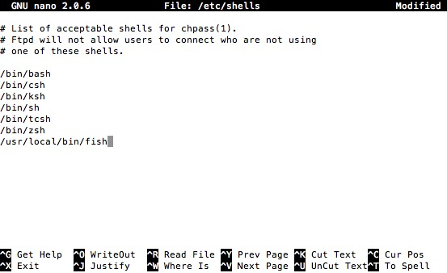

Bash 指南
nano 编辑器
- ctrl 表示 ^
- F3保存，F2退出
切换默认 bash
sudo nano /etc/shells- add
/usr/local/bin/fishto your list of shells chsh -s /usr/local/bin/fish

切换回来大概也就是这样，换对应路径即可
批量删除指定文件
find . -name ".Ulysses-Group.plist" -exec rm -Rf {} \;
清除不必要的服务
launchctl list 查看服务列表
launchctl remove xxxx 删除xxxxx服务的自启动
给权限操作
chmod 777 ./start.sh
基本操作
- 脚本的第一行叫 shebang，用来告知系统如何执行该脚本
#!/bin/bash - 输出内容
echo "Hello world!" - 每一句指令用换行或分号隔开
- 声明一个变量(不能有空格)
VARIABLE="Some string" - 使用变量
echo $VARIABLE,echo "$VARIABLE",echo '$VARIABLE' - 当赋值和 export 时，或者以其他方式使用变量时，变量名前不加 $
- 如果要使用变量的值，则要加 $
- 带你引号不会展开变量
- 在变量内部进行字符串替换
echo ${VARIABLE/Some/A}会把 VARIABLE 中首次出现的 Some 替换成 A - 内置变量
$?,$$,$#,$@
例子
echo "Last program return value: $?"
echo "Script's PID: $$"
echo "Number of arguments: $#"
echo "Scripts arguments: $@"
echo "Scripts arguments separated in different variables: $1 $2"
- 读取输入
read NAME不需要声明新变量
条件流程
通常的 IF
if [ $NAME -ne $USER ]
then
echo "Your name is your username"
else
echo "Your name isn't your username"
fi
Bash 的 case 语句与 Java 和 C++ 中的 switch 语句类似:
case "$VARIABLE" in
# 列出需要匹配的字符串
0) echo "There is a zero.";;
1) echo "There is a one.";;
*) echo "It is not null.";;
esac
表达式
- 格式
echo $(( 10 + 5 ))
上下文依赖
- bash 运行时依赖上下文
ls列出当前目录ls -l列出文件和目录的详细信息，指令可以带有选项- 前一个指令的输出可以当做后一个指令的输入。
grep用来匹配字符串 - 用下面的指令列出当前目录下所有的 txt 文件
ls -l | grep "\.txt" - 重定向可以到输出，输入和错误输出。 > 会覆盖已存在的文件，>> 会以累加的方式输出文件中
例如
python hello.py < "input.in"
python hello.py > "output.out"
python hellp.py >> "error.err"
- 一个指令可用
$()嵌套在另一个指令内部，如echo "There are $(ls | wc -l) items here."
其他
循环遍历给定的参数序列:变量\(VARIABLE 的值会被打印 3 次。注意 \` \` 和 \)( ) 等价。seq 返回长度为 3 的数组。
for VARIABLE in `seq 3`
do
echo "$VARIABLE"
done
你也可以使用函数，定义函数：
function foo ()
{
echo "Arguments work just like script arguments: $@"
echo "And: $1 $2..."
echo "This is a function"
return 0
}
更简单的方法
bar ()
{
echo "Another way to declare functions!"
return 0
}
调用函数
foo "My name is" $NAME
有很多有用的指令需要学习:
tail -n 10 file.txt
打印 file.txt 的最后 10 行
head -n 10 file.txt
打印 file.txt 的前 10 行
sort file.txt
将 file.txt 按行排序
uniq -d file.txt
报告或忽略重复的行，用选项 -d 打印重复的行
cut -d ',' -f 1 file.txt
打印每行中 ',' 之前内容
命令行的艺术
熟练使用命令行是一种常常被忽视，或被认为难以掌握的技能，但实际上，它会提高你作为工程师的灵活性以及生产力。本文是一份我在 Linux 上工作时，发现的一些命令行使用技巧的摘要。有些技巧非常基础，而另一些则相当复杂，甚至晦涩难懂。这篇文章并不长，但当你能够熟练掌握这里列出的所有技巧时，你就学会了很多关于命令行的东西了。
必读
涵盖范围：
- 这篇文章对刚接触命令行的新手以及具有命令行使用经验的人都有用处。本文致力于做到覆盖面广（尽量包括一切重要的内容），具体（给出最常见的具体的例子）以及简洁（避免不必要的，或是可以在其他地方轻松查到的细枝末节）。每个技巧在特定情境下或是基本的，或是能显著节约时间。
- 本文为 Linux 所写，除了仅限 MacOS X 系统节。其它节中的大部分内容都适用于其它 Unix 系统或 MacOS 系统，甚至 Cygwin。
- 本文关注于交互式 Bash，尽管很多技巧也适用于其他 shell 或 Bash 脚本。
- 本文包括了“标准的”Unix 命令和需要安装特定包的命令，只要它们足够重要。
注意事项：
- 为了能在一页内展示尽量多的东西，一些具体的信息会被间接的包含在引用页里。聪明机智的你如果掌握了使用 Google 搜索引擎的基本思路与命令，那么你将可以查阅到更多的详细信息。使用
apt-get／yum／dnf／pacman／pip／brew（以及其它合适的包管理器）来安装新程序。 - 使用 Explainshell 去获取相关命令、参数、管道等内容的解释。
基础
学习 Bash 的基础知识。具体来说，输入
man bash并至少全文浏览一遍; 它很简单并且不长。其他的 shell 可能很好用，但 Bash 功能强大且几乎所有情况下都是可用的 （ 只学习 zsh，fish 或其他的 shell 的话，在你自己的电脑上会显得很方便，但在很多情况下会限制你，比如当你需要在服务器上工作时）。学习并掌握至少一个基于文本的编辑器。通常 Vim （
vi） 会是你最好的选择，因为在终端里进行随机编辑 Vim 真的毫无敌手，哪怕是 Emacs、某大型 IDE 甚至时下非常流行的编辑器。学会如何使用
man命令去阅读文档。学会使用apropos去查找文档。了解有些命令并不对应可执行文件，而是Bash内置的，可以使用help和help -d命令获取帮助信息。学会使用
>和<来重定向输出和输入，学会使用|来重定向管道。明白>会覆盖了输出文件而>>是在文件未添加。了解标准输出 stdout 和标准错误 stderr。学会使用通配符
*（或许再算上?和[...]） 和引用以及引用中'和"的区别。熟悉 Bash 任务管理工具：
&，ctrl-z，ctrl-c，jobs，fg，bg，kill等。了解
ssh，以及学会通过使用ssh-agent，ssh-add等命令来实现基本的无密码认证。学会基本的文件管理：
ls和ls -l（了解ls -l中每一列代表的意义），less，head，tail和tail -f（甚至less +F），ln和ln -s（了解硬链接与软链接的区别），chown，chmod，du（硬盘使用情况概述：du -hs *）。 关于文件系统的管理，学习df，mount，fdisk，mkfs，lsblk。知道 inode 是什么（与ls -i和df -i等命令相关）。学习基本的网络管理：
ip或ifconfig，dig。熟悉正则表达式，以及
grep／egrep里不同参数的作用，例如-i，-o，-v，-A，-B和-C，这些参数是值得学习并掌握的。学会使用
apt-get，yum，dnf或pacman（取决于你使用的 Linux 发行版）来查找或安装软件包。并确保你的环境中有pip来安装基于 Python 的命令行工具 （接下来提到的部分程序使用pip来安装会很方便）。
日常使用
在 Bash 中，可以使用 Tab 自动补全参数，使用 ctrl-r 搜索命令行历史（在按下之后，键入便可以搜索，重复按下 ctrl-r 会在更多匹配中循环，按下 Enter 会执行找到的命令，按下右方向键会将结果放入当前行中，使你可以进行编辑）。
在 Bash 中，可以使用 ctrl-w 删除你键入的最后一个单词，使用 ctrl-u 删除整行，使用 alt-b 和 alt-f 以单词为单位移动光标，使用 ctrl-a 将光标移至行首，使用 ctrl-e 将光标移至行尾，使用 ctrl-k 删除光标至行尾的所有内容，使用 ctrl-l 清屏。键入
man readline查看 Bash 中的默认快捷键，内容很多。例如 alt-. 循环地移向前一个参数，以及 alt-* 展开通配符。你喜欢的话，可以键入
set -o vi来使用 vi 风格的快捷键，而set -o emacs可以把它改回来。为了方便地键入长命令，在设置你的编辑器后（例如
export EDITOR=vim），键入 ctrl-x ctrl-e 会打开一个编辑器来编辑当前命令。在 vi 模式下则键入 escape-v 实现相同的功能。键入
history查看命令行历史记录。其中有许多缩写，例如!$（最后键入的参数）和!!（最后键入的命令），尽管通常被 ctrl-r 和 alt-. 取代。回到上一个工作路径：
cd -如果你输入命令的时候改变了主意，按下 alt-# 来在行首添加
#，或者依次按下 ctrl-a， #， enter。这样做的话，之后你可以很方便的利用命令行历史回到你刚才输入到一半的命令。使用
xargs（ 或parallel）。他们非常给力。注意到你可以控制每行参数个数（-L）和最大并行数（-P）。如果你不确定它们是否会按你想的那样工作，先使用xargs echo查看一下。此外，使用-I{}会很方便。例如：
bash
find . -name '*.py' | xargs grep some_function
cat hosts | xargs -I{} ssh root@{} hostname
pstree -p有助于展示进程树。使用
pgrep和pkill根据名字查找进程或发送信号（-f参数通常有用）。了解你可以发往进程的信号的种类。比如，使用
kill -STOP [pid]停止一个进程。使用man 7 signal查看详细列表。使用
nohup或disown使一个后台进程持续运行。使用
netstat -lntp或ss -plat检查哪些进程在监听端口（默认是检查 TCP 端口; 使用参数-u检查 UDP 端口）。有关打开套接字和文件，请参阅
lsof。使用
uptime或w来查看系统已经运行多长时间。使用
alias来创建常用命令的快捷形式。例如：alias ll='ls -latr'使你可以方便地执行ls -latr命令。在 Bash 脚本中，使用
set -x去调试输出，尽可能的使用严格模式，使用set -e令脚本在发生错误时退出而不是继续运行，使用set -u来检查是否使用了未赋值的变量，使用set -o pipefail严谨地对待错误（尽管问题可能很微妙）。当牵扯到很多脚本时，使用trap。一个好的习惯是在脚本文件开头这样写，这会使它检测一些错误，并在错误发生时中断程序并输出信息：
bash
set -euo pipefail
trap "echo 'error: Script failed: see failed command above'" ERR
在 Bash 脚本中，子 shell（使用括号
(...)）是一种组织参数的便捷方式。一个常见的例子是临时地移动工作路径，代码如下：
bash
# do something in current dir
(cd /some/other/dir && other-command)
# continue in original dir
在 Bash 中，要注意其中有许多形式的扩展。检查变量是否存在：
${name:?error message}。例如，当 Bash 脚本需要一个参数时，可以使用这样的代码input_file=${1:?usage: $0 input_file}。数学表达式：i=$(( (i + 1) % 5 ))。序列：{1..10}。截断字符串：${var%suffix}和${var#prefix}。例如，假设var=foo.pdf，那么echo ${var%.pdf}.txt将输出foo.txt。使用括号扩展（
{...}）来减少输入相似文本，并自动化文本组合。这在某些情况下会很有用，例如mv foo.{txt,pdf} some-dir（同时移动两个文件），cp somefile{,.bak}（会被扩展成cp somefile somefile.bak）或者mkdir -p test-{a,b,c}/subtest-{1,2,3}（会被扩展成所有可能的组合，并创建一个目录树）。通过使用
<(some command)可以将输出视为文件。例如，对比本地文件/etc/hosts和一个远程文件：
sh
diff /etc/hosts <(ssh somehost cat /etc/hosts)
了解 Bash 中的“here documents”，例如
cat <<EOF ...。在 Bash 中，同时重定向标准输出和标准错误，
some-command >logfile 2>&1。通常，为了保证命令不会在标准输入里残留一个打开了的文件句柄导致你当前所在的终端无法操作，添加</dev/null是一个好习惯。使用
man ascii查看具有十六进制和十进制值的ASCII表。man unicode，man utf-8，以及man latin1有助于你去了解通用的编码信息。使用
screen或tmux来使用多个屏幕，当你在使用 ssh 时（保存 session 信息）将尤为有用。另一个轻量级的解决方案是dtach。ssh 中，了解如何使用
-L或-D（偶尔需要用-R）去开启隧道是非常有用的，例如当你需要从一台远程服务器上访问 web。对 ssh 设置做一些小优化可能是很有用的，例如这个
~/.ssh/config文件包含了防止特定环境下断开连接、压缩数据、多通道等选项：
TCPKeepAlive=yes
ServerAliveInterval=15
ServerAliveCountMax=6
Compression=yes
ControlMaster auto
ControlPath /tmp/%r@%h:%p
ControlPersist yes
部分其他的关于 ssh 的选项是安全敏感且应当小心启用的。例如在可信任的网络中：
StrictHostKeyChecking=no，ForwardAgent=yes考虑使用
mosh作为 ssh 的替代品，它使用 UDP 协议。获取文件的八进制格式权限，使用类似如下的代码：
sh
stat -c '%A %a %n' /etc/timezone
使用
fpp（PathPicker）可以与基于另一个命令(例如git）输出的文件交互。将 web 服务器上当前目录下所有的文件（以及子目录）暴露给你所处网络的所有用户，使用：
python -m SimpleHTTPServer 7777（使用端口 7777 和 Python 2）或python -m http.server 7777（使用端口 7777 和 Python 3）。以某种权限执行命令，使用
sudo（root 权限）或sudo -u（其他用户）。使用su或者sudo bash来启动一个以对应用户权限运行的 shell。使用su -模拟其他用户的登录。
文件及数据处理
在当前路径下通过文件名定位一个文件，
find . -iname '*something*'（或类似的）。在所有路径下通过文件名查找文件，使用locate something（但请记住updatedb可能没有对最近新建的文件建立索引）。使用
ag在源代码或数据文件里检索（比grep -r更好）。将 HTML 转为文本：
lynx -dump -stdinMarkdown，HTML，以及所有文档格式之间的转换，试试
pandoc。如果你不得不处理 XML，
xmlstarlet宝刀未老。使用
jq处理 JSON。使用
shyaml处理 YAML。Excel 或 CSV 文件的处理，csvkit 提供了
in2csv，csvcut，csvjoin，csvgrep等工具。关于 Amazon S3，
s3cmd很方便而s4cmd更快。Amazon 官方的aws以及saws是其他 AWS 相关工作的基础。了解如何使用
sort和uniq，包括 uniq 的-u参数和-d参数，详见后文单行脚本节。另外可以了解一下comm。了解如何使用
cut，paste和join来更改文件。很多人都会使用cut，但几乎都不会使用join。了解如何运用
wc去计算新行数（-l），字符数（-m），单词数（-w）以及字节数（-c）。了解如何使用
tee将标准输入复制到文件甚至标准输出，例如ls -al | tee file.txt。了解语言环境对许多命令行工具的微妙影响，包括排序的顺序和性能。大多数 Linux 的安装过程会将
LANG或其他有关的变量设置为符合本地的设置。意识到当你改变语言环境时，排序的结果可能会改变。明白国际化可能会使 sort 或其他命令运行效率下降许多倍。某些情况下（例如集合运算）你可以放心的使用export LC_ALL=C来忽略掉国际化并使用基于字节的顺序。了解
awk和sed关于数据的简单处理的用法。例如，将文本文件中第三列的所有数字求和：awk '{ x += $3 } END { print x }'. 这可能比同等作用的 Python 代码快三倍且代码量少三倍。替换一个或多个文件中出现的字符串：
sh
perl -pi.bak -e 's/old-string/new-string/g' my-files-*.txt
使用
repren来批量重命名，或是在多个文件中搜索替换。（有些时候rename命令也可以批量重命名，但要注意，它在不同 Linux 发行版中的功能并不完全一样。）
sh
# Full rename of filenames, directories, and contents foo -> bar:
repren --full --preserve-case --from foo --to bar .
# Recover backup files whatever.bak -> whatever:
repren --renames --from '(.*)\.bak' --to '\1' *.bak
# Same as above, using rename, if available:
rename 's/\.bak$//' *.bak
根据 man 页面的描述，
rsync真的是一个快速且非常灵活的文件复制工具。它通常被用于机器间的同步，但在本地也同样有用。它同时也是删除大量文件的最快方法之一：
sh
mkdir empty && rsync -r --delete empty/ some-dir && rmdir some-dir
使用
shuf从一个文件中随机选取多行。了解
sort的参数。处理数字方面，使用-n或者-h来处理可读性数字（例如du -h的输出）。明白键的工作原理（-t和-k）。例如，注意到你需要-k1，1来仅按第一个域来排序，而-k1意味着按整行排序。稳定排序（sort -s）在某些情况下很有用。例如，以第二个域为主关键字，第一个域为次关键字进行排序，你可以使用sort -k1，1 | sort -s -k2，2。如果你想在 Bash 命令行中写 tab 制表符，按下 ctrl-v [Tab] 或键入
$'\t'（后者可能更好，因为你可以复制粘贴它）。标准的源代码对比及合并工具是
diff和patch。使用diffstat查看变更总览数据。注意到diff -r对整个文件夹有效。使用diff -r tree1 tree2 | diffstat查看变更总览数据。对于二进制文件，使用
hd使其以十六进制显示以及使用bvi来编辑二进制。同样对于二进制文件，
strings（包括grep等等）允许你查找一些文本。二进制文件对比（Delta 压缩），使用
xdelta3。使用
iconv更改文本编码。而更高级的用法，可以使用uconv，它支持一些高级的 Unicode 功能。例如，这条命令将所有元音字母转为小写并移除了：
sh
uconv -f utf-8 -t utf-8 -x '::Any-Lower; ::Any-NFD; [:Nonspacing Mark:] >; ::Any-NFC; ' < input.txt > output.txt
拆分文件，查看
split（按大小拆分）和csplit（按模式拆分）。用
dateutils中的dateadd,datediff,strptime等工具操作日期和时间表达式。使用
zless，zmore，zcat和zgrep对压缩过的文件进行操作。
系统调试
curl和curl -I可以便捷地被应用于 web 调试中，它们的好兄弟wget也可以，或者是更潮的httpie。使用
iostat、netstat、top（htop更佳）和dstat去获取硬盘、cpu 和网络的状态。熟练掌握这些工具可以使你快速的对系统的当前状态有一个大概的认识。使用
netstat和ss查看网络连接的细节。若要对系统有一个深度的总体认识，使用
glances。它在一个终端窗口中向你提供一些系统级的数据。这对于快速的检查各个子系统非常有帮助。若要了解内存状态，运行并理解
free和vmstat的输出。尤其注意“cached”的值，它指的是 Linux 内核用来作为文件缓存的内存大小，因此它与空闲内存无关。Java 系统调试则是一件截然不同的事，一个可以用于 Oracle 的 JVM 或其他 JVM 上的调试的技巧是你可以运行
kill -3 <pid>同时一个完整的栈轨迹和堆概述（包括 GC 的细节）会被保存到标准输出/日志文件。JDK 中的jps，jstat，jstack，jmap很有用。SJK tools 更高级.使用
mtr去跟踪路由，用于确定网络问题。用
ncdu来查看磁盘使用情况，它比常用的命令，如du -sh *，更节省时间。查找正在使用带宽的套接字连接或进程，使用
iftop或nethogs。ab工具（捆绑于 Apache）可以简单粗暴地检查 web 服务器的性能。对于更复杂的负载测试，使用siege。wireshark，tshark和ngrep可用于复杂的网络调试。了解
strace和ltrace。这俩工具在你的程序运行失败、挂起甚至崩溃，而你却不知道为什么或你想对性能有个总体的认识的时候是非常有用的。注意 profile 参数（-c）和附加到一个运行的进程参数 （-p）。了解使用
ldd来检查共享库。了解如何运用
gdb连接到一个运行着的进程并获取它的堆栈轨迹。学会使用
/proc。它在调试正在出现的问题的时候有时会效果惊人。比如：/proc/cpuinfo，/proc/meminfo，/proc/cmdline，/proc/xxx/cwd，/proc/xxx/exe，/proc/xxx/fd/，/proc/xxx/smaps（这里的xxx表示进程的 id 或 pid）。当调试一些之前出现的问题的时候，
sar非常有用。它展示了 cpu、内存以及网络等的历史数据。查看你当前使用的系统，使用
uname，uname -a（Unix／kernel 信息） 或者lsb_release -a（Linux 发行版信息）。无论什么东西工作得很欢乐时试试
dmesg（可能是硬件或驱动问题）。
单行脚本
一些命令组合的例子：
当你需要对文本文件做集合交、并、差运算时，结合使用
sort/uniq很有帮助。假设a与b是两内容不同的文件。这种方式效率很高，并且在小文件和上G的文件上都能运用 （sort不被内存大小约束，尽管在/tmp在一个小的根分区上时你可能需要-T参数），参阅前文中关于LC_ALL和sort的-u参数的部分。
sh
cat a b | sort | uniq > c # c is a union b
cat a b | sort | uniq -d > c # c is a intersect b
cat a b b | sort | uniq -u > c # c is set difference a - b
使用
grep . *（每行都会附上文件名）或者head -100 *（每个文件有一个标题）来阅读检查目录下所有文件的内容。这在检查一个充满配置文件的目录（如/sys、/proc、/etc）时特别好用。计算文本文件第三列中所有数的和（可能比同等作用的 Python 代码快三倍且代码量少三倍）：
sh
awk '{ x += $3 } END { print x }' myfile
如果你想在文件树上查看大小/日期，这可能看起来像递归版的
ls -l但比ls -lR更易于理解：
sh
find . -type f -ls
假设你有一个类似于 web 服务器日志文件的文本文件，并且一个确定的值只会出现在某些行上，假设一个
acct_id参数在URI中。如果你想计算出每个acct_id值有多少次请求，使用如下代码：
sh
cat access.log | egrep -o 'acct_id=[0-9]+' | cut -d= -f2 | sort | uniq -c | sort -rn
运行这个函数从这篇文档中随机获取一条技巧（解析 Markdown 文件并抽取项目）：
sh
function taocl() {
curl -s https://raw.githubusercontent.com/jlevy/the-art-of-command-line/master/README.md |
pandoc -f markdown -t html |
xmlstarlet fo --html --dropdtd |
xmlstarlet sel -t -v "(html/body/ul/li[count(p)>0])[$RANDOM mod last()+1]" |
xmlstarlet unesc | fmt -80
}
冷门但有用
expr：计算表达式或正则匹配m4：简单地宏处理器yes：多次打印字符串cal：漂亮的日历env：执行一个命令（脚本文件中很有用）printenv：打印环境变量（调试时或在使用脚本文件时很有用）look：查找以特定字符串开头的单词cut、paste和join：数据修改fmt：格式化文本段落pr：将文本格式化成页/列形式fold：包裹文本中的几行column：将文本格式化成多列或表格expand和unexpand：制表符与空格之间转换nl：添加行号seq：打印数字bc：计算器factor：分解因数gpg：加密并签名文件toe：terminfo entries 列表nc：网络调试及数据传输socat：套接字代理，与netcat类似slurm：网络可视化dd：文件或设备间传输数据file：确定文件类型tree：以树的形式显示路径和文件，类似于递归的lsstat：文件信息time：执行命令，并计算执行时间lockfile：使文件只能通过rm -f移除logrotate: 切换、压缩以及发送日志文件watch：重复运行同一个命令，展示结果并高亮有更改的部分tac：反向输出文件shuf：文件中随机选取几行comm：一行一行的比较排序过的文件pv：监视通过管道的数据hd，hexdump，xxd，biew和bvi：保存或编辑二进制文件strings：从二进制文件中抽取文本tr：转换字母iconv或uconv：简易的文件编码split和csplit：分割文件sponge：在写入前读取所有输入，在读取文件后再向同一文件写入时比较有用，例如grep -v something some-file | sponge some-fileunits：将一种计量单位转换为另一种等效的计量单位（参阅/usr/share/units/definitions.units）apg：随机生成密码7z：高比例的文件压缩ldd：动态库信息nm：提取 obj 文件中的符号ab：性能分析 web 服务器strace：系统调用调试mtr：更好的网络调试跟踪工具cssh：可视化的并发 shellrsync：通过 ssh 或本地文件系统同步文件和文件夹wireshark和tshark：抓包和网络调试工具ngrep：网络层的 grephost和dig：DNS 查找lsof：列出当前系统打开文件的工具以及查看端口信息dstat：系统状态查看glances：高层次的多子系统总览iostat：硬盘使用状态mpstat: CPU 使用状态vmstat: 内存使用状态htop：top 的加强版last：登入记录w：查看处于登录状态的用户id：用户/组 ID 信息sar：系统历史数据iftop或nethogs：套接字及进程的网络利用ss：套接字数据dmesg：引导及系统错误信息sysctl: 在内核运行时动态地查看和修改内核的运行参数hdparm：SATA/ATA 磁盘更改及性能分析lsb_release：Linux 发行版信息lsblk：列出块设备信息：以树形展示你的磁盘以及磁盘分区信息lshw，lscpu，lspci，lsusb和dmidecode：查看硬件信息，包括 CPU、BIOS、RAID、显卡、USB设备等lsmod和modinfo：列出内核模块，并显示其细节fortune，ddate和sl：额，这主要取决于你是否认为蒸汽火车和莫名其妙的名人名言是否“有用”
仅限 MacOS X 系统
以下是仅限于 MacOS 系统的技巧
用
brew（Homebrew）或者port（MacPorts）进行包管理。这些可以用来在 Mac 系统上安装以上的大多数命令。用
pbcopy复制任何命令的输出到桌面应用，用pbpaste粘贴输入。若要在 Mac OS 终端中将 Option 键视为 alt 键（例如在上面介绍的 alt-b, alt-f 等命令中用到），打开 偏好设置 -> 描述文件 -> 键盘 并勾选“使用 Option 键作为 Meta 键”。
用
open或者open -a /Applications/Whatever.app使用桌面应用打开文件。Spotlight： 用
mdfind搜索文件，用mdls列出元数据（例如照片的 EXIF 信息）。注意 MacOS 系统是基于 BSD UNIX 的，许多命令（例如
ps，ls，tail，awk，sed）都和 Linux 中有些微的不同，这些极大的被 System V-style Unix 和 GNU 工具影响。你可以通过标题为BSD General Commands Manual
的 man 页面发现这些不同。在有些情况下 GNU 版本的命令也可能被安装（例如gawk和gsed对应 GNU 中的 awk 和 sed ）。如果要写跨平台的 Bash 脚本，避免使用这些命令（例如，考虑 Python 或者perl）或者经过仔细的测试。用
sw_vers获取 MacOS 的版本信息。
更多资源
- awesome-shell：一份精心组织的命令行工具及资源的列表。
- awesome-osx-command-line：一份针对 Mac OS 命令行的更深入的指南。
- Strict mode：为了编写更好的脚本文件。
- shellcheck：一个静态 shell 脚本分析工具，本质上是 bash／sh／zsh 的 lint。
- Filenames and Pathnames in Shell：有关如何在 shell 脚本里正确处理文件名的细枝末节。